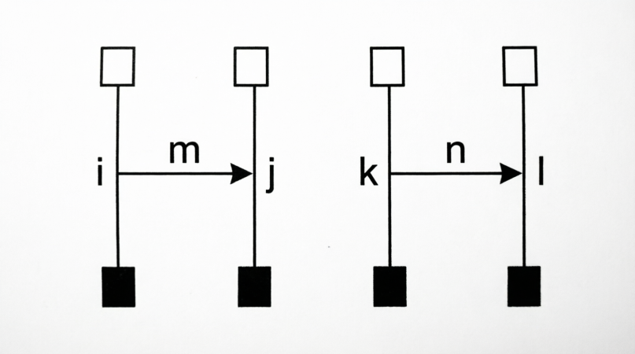
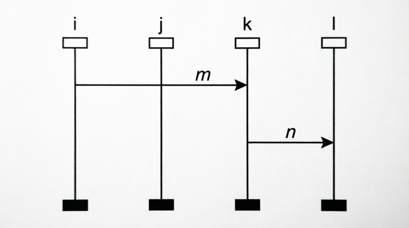
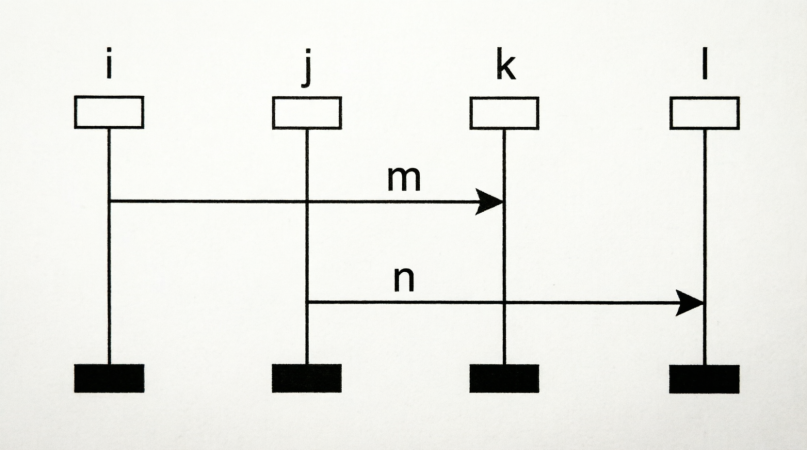
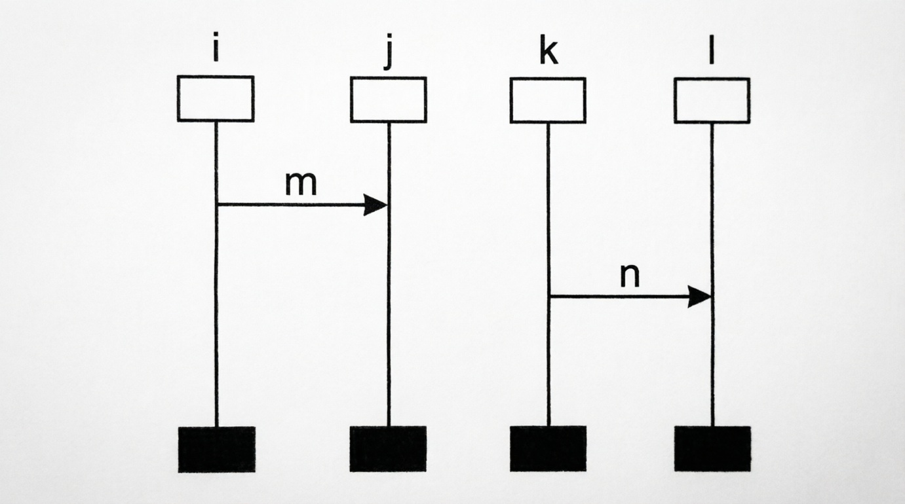

Annotations / Qwen 3.6 Plus - Thinking / Example 4.docx
Question: Consider the following two message sequence charts labelled "first" and "second"; compose them horizontally and draw the resulting composed message sequence chart.

Answer:
Based on standard Message Sequence Chart (MSC) notation (ITU-T Z.120), **horizontal composition** typically refers to **parallel composition**. This means the two charts are placed side-by-side, and their events can occur concurrently (in any relative order), as long as the internal order of each individual chart is preserved.
Since the instances in the first chart (`i`, `j`) are different from the instances in the second chart (`k`, `l`), the resulting chart will simply contain all four instances running in parallel.
Here is the drawing of the resulting composed message sequence chart:
```text
+-------------------------------------------------------+
| |
| i j k l |
| +---+ +---+ +---+ +---+ |
| | | | | | | | | |
| | | | | | | | | |
| | +---------> | | | | (message m) |
| | | | | | | | | |
| | | | | | +---------> | (message n) |
| | | | | | | | | |
| | | | | | | | | |
| +===+ +===+ +===+ +===+ |
| |
+-------------------------------------------------------+
```
**Explanation of the composition:**
* **Instances:** The four instances `i`, `j`, `k`, and `l` are arranged horizontally from left to right.
* **Messages:**
* Message `m` is sent from instance `i` to instance `j`.
* Message `n` is sent from instance `k` to instance `l`.
* **Timing:** Because this is a horizontal (parallel) composition, there is no strict causal relationship between message `m` and message `n`. They are shown occurring roughly at the same time, but in a real execution, `m` could happen before, after, or simultaneously with `n`.
Please draw the resulting MSC as an image.

Task type: Composition
Judgment: Correct
Question: What is the order between sending m and receiving n in the composed diagram.
Answer:
In the horizontally composed diagram, **there is no defined order** between sending message **m** and receiving message **n**.
Here's why:
1. **Horizontal composition = Parallel composition**: When MSCs are composed horizontally, they run concurrently/in parallel.
2. **Independent instances**:
- Message **m** involves instances **i** and **j**
- Message **n** involves instances **k** and **l**
- These are completely separate instances with no causal dependencies
3. **No ordering constraint**: In the composed diagram, the sending of **m** and the receiving of **n** can occur in any order:
- **m** could be sent before **n** is received
- **n** could be received before **m** is sent
- They could happen simultaneously
The only ordering constraints preserved in the composition are:
- Within "first": sending **m** must happen before receiving **m**
- Within "second": sending **n** must happen before receiving **n**
But there is **no causal relationship** between events from different MSCs in a parallel composition, so the relative order of **m** and **n** is **unspecified/concurrent**.
Task type: Composition
Judgment: Correct
Question:
Please consider the original two MSCs labelled "first" and "second", given here again. Please compose them vertically (by putting "first" on top and "second" at the bottom). Please draw the resulting composed diagram
Answer:
Based on the rules of Message Sequence Charts (MSC), vertical composition (concatenation) places the events of the first chart before the events of the second chart in time.
Since the instances in the first chart (`i`, `j`) are different from the instances in the second chart (`k`, `l`), the resulting composed diagram will contain all four instances running in parallel, but with the actions of "first" happening before the actions of "second".
Here is the resulting composed diagram:
```text
+-------------------------------------------------------+
| |
| i j k l |
| +---+ +---+ +---+ +---+ |
| | | | | | | | | |
| | | | | | | | | |
| | +---------> | | | | (message m) |
| | | | | | | | | |
| | | | | | | | | |
| | | | | | +---------> | (message n) |
| | | | | | | | | |
| | | | | | | | | |
| +===+ +===+ +===+ +===+ |
| |
+-------------------------------------------------------+
```
**Explanation:**
1. **Instances:** The chart now has four lifelines labeled `i`, `j`, `k`, and `l` across the top.
2. **Ordering:** Because it is a **vertical composition**, the events from "msc first" occur above the events from "msc second".
* First, message **m** is sent from `i` to `j`.
* Subsequently (lower down in the diagram), message **n** is sent from `k` to `l`.
3. **Concurrency:** While `m` is happening, instances `k` and `l` are idle (their lifelines just go straight down). While `n` is happening later, instances `i` and `j` are idle.
Please draw the resulting MSC as an image.



Perfect! The resulting MSC diagram shows the vertical composition of the two original MSCs:
Four lifelines (i, j, k, l) are displayed from left to right
Message m is sent from instance i to instance j in the upper portion (from the "first" MSC)
Message n is sent from instance k to instance l in the lower portion (from the "second" MSC)
The vertical positioning shows that message m occurs before message n in time, which is the key characteristic of vertical composition
This correctly represents the sequential execution where the "first" MSC completes before the "second" MSC begins.
Task type: Composition
Judgment: Correct
Question:
What is the order between sending m and receiving n in the vertically composed diagram.
Answer:
In the vertically composed diagram, **sending m happens before receiving n**.
In vertical composition (also called sequential composition), all events in the top MSC ("first") must complete before any events in the bottom MSC ("second") can begin. This creates a strict causal ordering where:
1. Message m is sent from i to j (in the upper portion)
2. Then message n is sent from k to l (in the lower portion)
Therefore, there is a **happens-before relationship**: sending m → receiving n. The sending of m temporally precedes the receiving of n in the vertically composed diagram.
Task type: Composition
Judgment: Incorrect